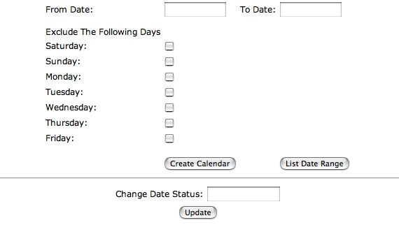
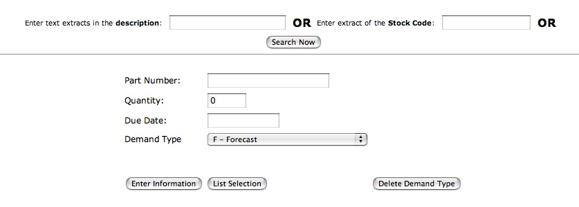
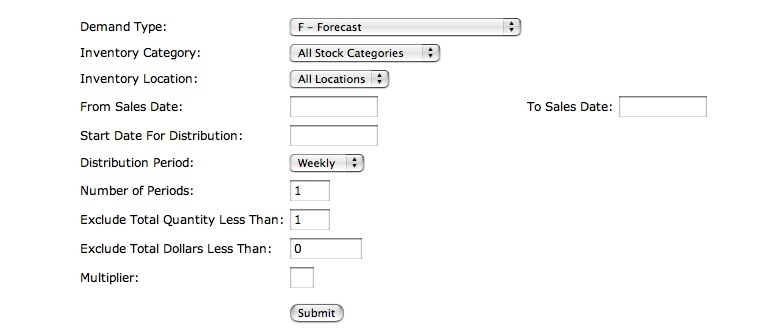
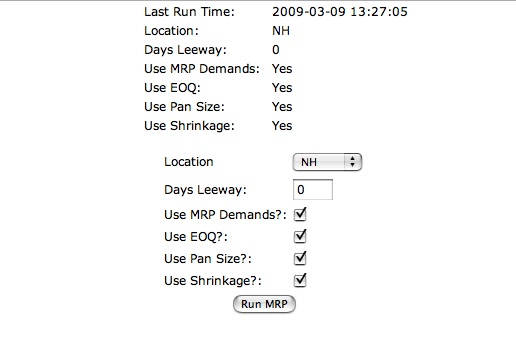
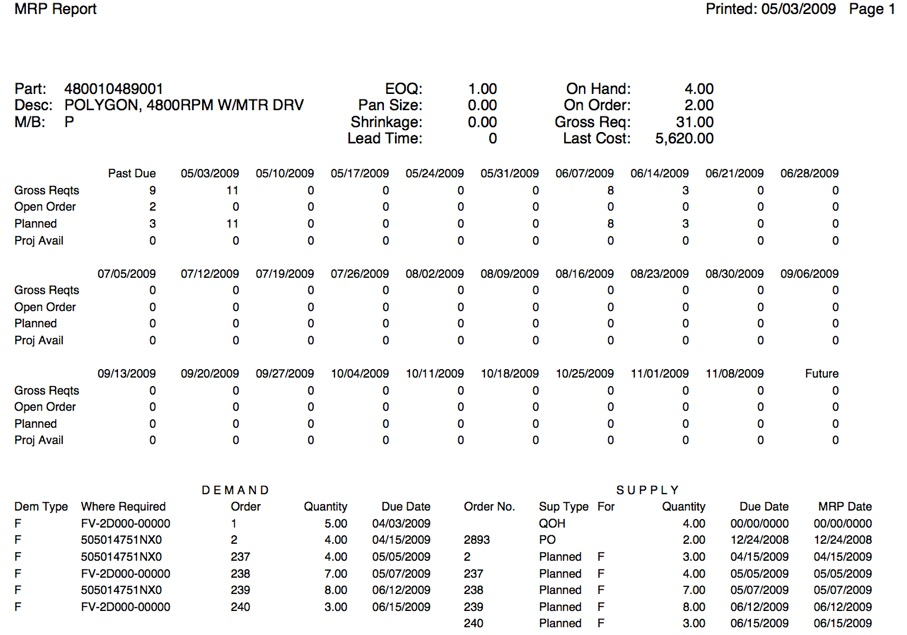

MRP - Material Requirements Planning -is software used to manage production and purchasing in an efficient and economical manner. It takes demand from sources such as current and forecast orders, work orders, and parts below safety levels, subtracts supply, in the form of inventory on hand, on order, or in process, and calculates requirements for ordering or building parts to cover that demand. This entry in the wiki will describe the MRP features that are available in webERP and the procedures to follow to implement the system.
To effectively run MRP, certain information relating to parts should be established. Since MRP calculates the quantities to purchase or make based on this data, it is important to ensure that these parameters are maintained rigourously. As always the garbage in -> garbage out principles apply. The critical data required is as follows:
Under Item Maintenance -> Modify Item Details, there are three "order quantity modifiers", which are fields that will inflate the quantity MRP will recommend either purchasing or building to cover a demand.
Under Item Maintenance -> Maintain Reorder Levels, the re-order level for a part at a certain location is specified. If the quantity on hand for the location falls below that level, MRP will create a demand to cover the difference.
Under Item Maintenance -> Maintain Purchasing Data, Lead Time can be entered. MRP uses this in scheduling recommended orders.
To avoid situations where, based upon a part’s need (required) date minus its lead time, MRP might schedule a part for a day where the business is closed, a Manufacturing Calendar of valid dates can be created. This is done under the Setup menu – Inventory Setup - MRP Available Production Days.

To initially create the calendar, enter the From Date and To Date, click on any days of the week you wish to exclude, and press the Create Calendar button. After that, you can enter individual dates in the Change Date Status field and press UPDATE to change that date’s status from valid to invalid or invalid to valid. Entering a From Date and To Date and pressing List Date Range will display all the days in the range and show “YES” if they are valid manufacturing days and “NO” if they are not. When creating the calendar, the date range should extend beyond the planning period you are using for MRP, and keep in mind that the Create Calendar button will purge any previously entered calendar.
The next step in preparing for the MRP is to enter demand forecasts. This is an optional step if you only want to consider current orders. Before entering the actual demands, it is necessary to create Demand Types, which are used to organize the demand records you create and make it easier to keep track of and edit records. Demand Types are created under Setup – Inventory Setup – MRP Demand Types. Simply enter a Demand Type code and a description. At least one Demand Type must be created, but you can have as many as you want to distinguish the various types of demands that you want to keep track of. The Demand Type appears in various reports, and the system also allows for the mass deletion of demand records by the Demand Type.
There are two programs to enter actual order demands, both of them under the Manufacturing menu.
The first, Master Schedule, allows for entering, editing, and deleting individual demands, and also for the listing of demands by part number or Demand Type, and the deletion by Demand Type.

To enter a demand, type in the part number, quantity, and due date, select the Demand Type, and press the Enter Information button. Pressing the List Selection button displays multiple records. If the part number field is blank, all demands for the selected Demand Type will be displayed. If a part number is entered, all demands for that part number will be displayed. When the demands are displayed, there are buttons to press to edit or delete that particular demand. Pressing the Delete Demand Type button deletes all demands for the selected Demand Type.
The Master Schedule can be generated automatically using the Auto Create Master Schedule script - this generates multiple demands from sales orders based on the selection criteria entered.

First, select the Demand Type for the demands that are to be created. Next, enter the selection criteria for the sales orders, which would be the inventory category, inventory location, and the date range for the sales orders. Next, enter the Start Date for Distribution, which is the due date for the first demand record that will be created, and then select the type of distribution period – weekly or monthly – and the number of periods the total quantity will be distributed over. Parts can be excluded based on their total quantity or the sales amount. A Multiplier can be used that multiplies the total quantity for each part by that number; an example of its usage would a case where you wanted to create demands for the next 18 months, but rather than just entering a date range for the previous 18 months, you entered a date range for the last 6 months and used a Multiplier of 3 so that it would use the latest sales patterns. To clarify how the whole program works, the user enters the selection criteria for the sales orders, the program finds the total quantity for each part, and then creates demand records that distribute that quantity for the type and number of periods entered. If a part had a total quantity of 12 and the number of periods selected was 12, 12 records with a quantity of 1 would be created; if the total quantity were 3, records with a quantity of 1 for the first 3 periods would be created; if the total were 15, the first 3 records would have a quantity of 2 and the last 9 would have a quantity of 1. After the demands are created, they can be edited or deleted using the Master Schedule program, selecting either by part number or Demand Type.
Only once all of the preliminary steps have been taken, the MRP itself can be run. Since MRP calculations are based on the data in the system about:
If this data is not rigourously maintained then the MRP calculations are potentially not well founded - do not proceed with MRP calculations until the above data is checked and double checked in your system.
The MRP calculation is under Manufacturing -> MRP Calculation.

The program displays the last time MRP was run and the parameters that were selected for that run. There are check boxes to specify if MRP Demands are used in calculating the MRP and also if the EOQ, pan size, or shrinkage factor are used. The inventory location that should be used for the quantity on hand can be selected. Days leeway can also be entered and is used to determine if a purchase order or work order should be rescheduled; if the difference between a requirement date and the due date of the purchase order or work order is within the days leeway, then the order is not shown to need rescheduling.
Here is how MRP works. First, it finds a level number for each part based on the bom (Bill of Materials) file; a part with no other parts under it in a bom structure has a level of 0, while a part with 7 levels of parts under it has a level of 7. Next, an mrpsupplies table is created based on the current quantity on hand, open purchase orders, and work orders, and an mrprequirements table is created based on open sales orders, worequirements records for open work orders, parts below their reorder levels, and demands entered in the mrpdemands table for sales forecasting. MRP subtracts all demands from the supplies for each part, sorting the parts by the level number and starting with the highest level, and creates an mrpplannedorder record if there is insufficient supply to cover the demand. If that part has parts below it in the bom structure, MRP also creates an mrprequirements record for the lower level parts based on the net requirement for the top level part times the quantity per assembly for the component, with a schedule date based on the lead time for the part. MRP is a regenerative process, meaning that every time it is run, it purges the old files and creates new ones. The time it takes to run will depend on file sizes and the system it is being run on, but it should be quick enough so that it can be run often and various what-if scenarios can be tried as far as sales forecasts and other parameters go.
MRP produces several reports that are under Manufacturing -> Inquiries and Reports. MRP Reschedules Required shows the work orders and purchase orders that, according to the MRP, need to have adjustments made to their due dates. MRP Suggested Purchase Orders and MRP Suggested Work Orders show the orders that MRP has determined should be created to cover demands. MRP Shortages shows all of the parts that have an insufficient quantity to satisfy demand. One thing to keep in mind about this report is that if there is a shortage of a top level assembly, it shows on the report as well as the parts that make it up, so the total dollar amounts might be doubled. The inquiry simply called MRP is used to display all of the supply and demand information for a part.

The top part of the display shows total gross requirements, open orders, planned orders, and projected quantity available in weekly buckets. The left part of the bottom section shows the source of all demand for the item, and the right part of the bottom section shows all available supply and all supply that MRP suggests should be created to cover demand. All of these reports use the tables created by MRP, so if a new purchase order or work order is created, it and any effect it might have will not show up in the reports unless the MRP is run again.